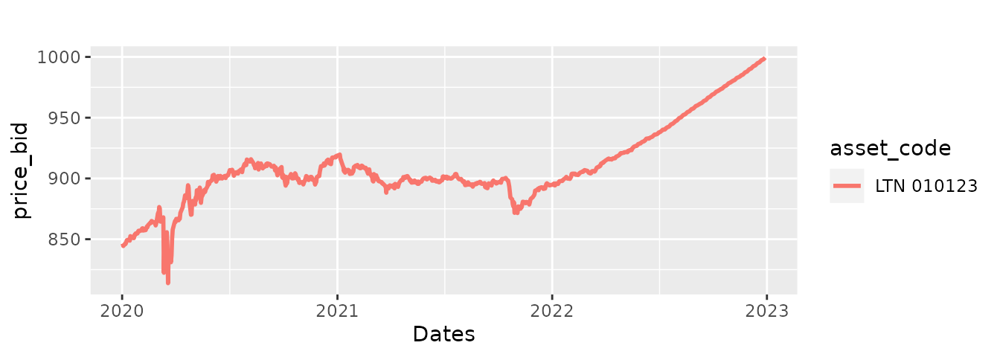
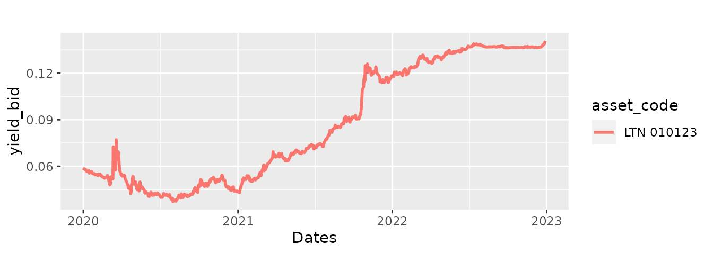

How to use GetTDData
Marcelo Perlin
2023-01-27
Source:vignettes/gtdd-vignette_GetTDData.Rmd
gtdd-vignette_GetTDData.RmdInformation regarding prices and yields of bonds issued by the Brazilian government can be downloaded manually as excel files from the Tesouro Direto website. However, it can be painful to aggregate all of this data into something useful as the files don’t have an uniform format and are all divided by year and asset code.
Package GetTDData makes the process of importing data from Tesouro direto much easier. All you need is the name of fixed income assets (LFT, LTN, NTN-C, NTN-B, NTN-B Principal, NTN-F).
How to use GetTDData
Suppose you need financial data (prices and yields) for a bond of type LTN with a maturity (end of contract) at 2023-01-01. This bullet bond is the most basic debt contract the Brazilian government issues. It does not pay any value (coupon) during its lifetime and will pay 1000 R$ at maturity.
In order to get the data, all you need to do is to run the following code in R:
library(GetTDData)
assets <- 'LTN' # Identifier of assets
first_year <- 2020
last_year <- 2022
df_td <- td_get(assets,
first_year,
last_year)## ## ── Downloading TD files## ℹ Downloading LTN_2020.xls## ✔ /tmp/RtmpjW5gki/td-files/LTN/LTN_2020.xls is found, with size 176.1 kB.## ℹ Downloading LTN_2021.xls## ✔ /tmp/RtmpjW5gki/td-files/LTN/LTN_2021.xls is found, with size 175.1 kB.## ℹ Downloading LTN_2022.xls## ✔ /tmp/RtmpjW5gki/td-files/LTN/LTN_2022.xls is found, with size 175.6 kB.## ## ── Checking files## ✔ Found 3 files## ## ── Reading files## ℹ Reading /tmp/RtmpjW5gki/td-files/LTN/LTN_2020.xls## ✔ Reading Sheet LTN 010121## ✔ Reading Sheet LTN 010122## ✔ Reading Sheet LTN 010123## ✔ Reading Sheet LTN 010125## ✔ Reading Sheet LTN 010126## ℹ Reading /tmp/RtmpjW5gki/td-files/LTN/LTN_2021.xls## ✔ Reading Sheet LTN 010122## ✔ Reading Sheet LTN 010123## ✔ Reading Sheet LTN 010724## ✔ Reading Sheet LTN 010125## ✔ Reading Sheet LTN 010126## ℹ Reading /tmp/RtmpjW5gki/td-files/LTN/LTN_2022.xls## ✔ Reading Sheet LTN 010123## ✔ Reading Sheet LTN 010724## ✔ Reading Sheet LTN 010125## ✔ Reading Sheet LTN 010126## ✔ Reading Sheet LTN 010129Let’s plot the prices to check if the code worked:
##
## Attaching package: 'dplyr'## The following objects are masked from 'package:stats':
##
## filter, lag## The following objects are masked from 'package:base':
##
## intersect, setdiff, setequal, union
# filter LTN
my_asset_code <- "LTN 010123"
LTN <- df_td %>%
filter(asset_code == my_asset_code)
p <- ggplot(data = LTN,
aes(x = as.Date(ref_date),
y = price_bid,
color = asset_code)) +
geom_line(size = 1) + scale_x_date() + labs(title = '', x = 'Dates')## Warning: Using `size` aesthetic for lines was deprecated in ggplot2 3.4.0.
## ℹ Please use `linewidth` instead.
print(p)
As expected, the prices from this bond will converge to its face value, 1000 R$, at the maturity date. We can also look at its time-varying annual yield:
p <- ggplot(data = LTN,
aes(x = as.Date(ref_date),
y = yield_bid,
color = asset_code)) +
geom_line(linewidth = 1) +
scale_x_date() +
labs(title = '',
x = 'Dates')
print(p)
By default, GetTDData downloads all available data from
the website. Suppose we wanted to look at the prices of all available
maturities for bonds of type LTN. Since the data is already downloaded,
all we need to do is to plot the prices and yields of the different debt
contracts:
# plot data (prices)
p <- ggplot(data = df_td,
aes(x = as.Date(ref_date),
y = price_bid,
color = asset_code)) +
geom_line() +
scale_x_date() +
labs(title = '', x = 'Dates', y = 'Prices' )
print(p)
# plot data (yields)
p <- ggplot(data = df_td,
aes(x = as.Date(ref_date), y = yield_bid, color = asset_code)) +
geom_line() +
scale_x_date() +
labs(title = '', x = 'Dates', y = 'Yields' )
print(p)